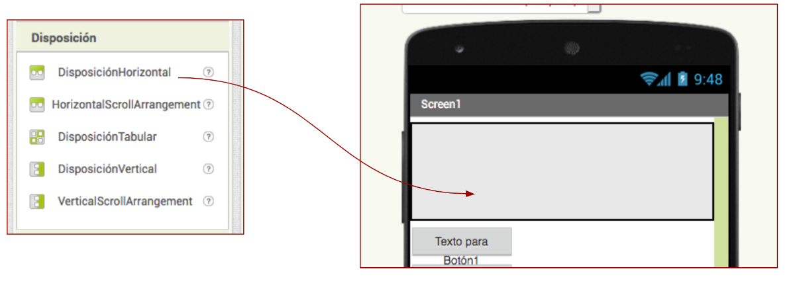
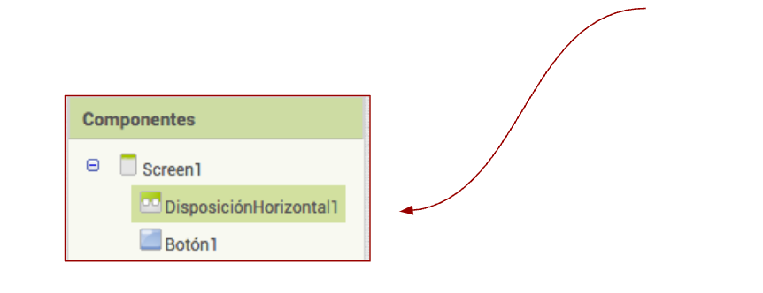
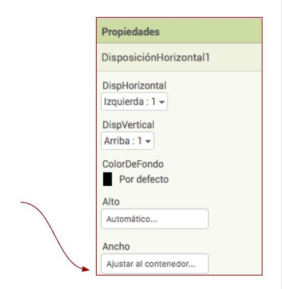
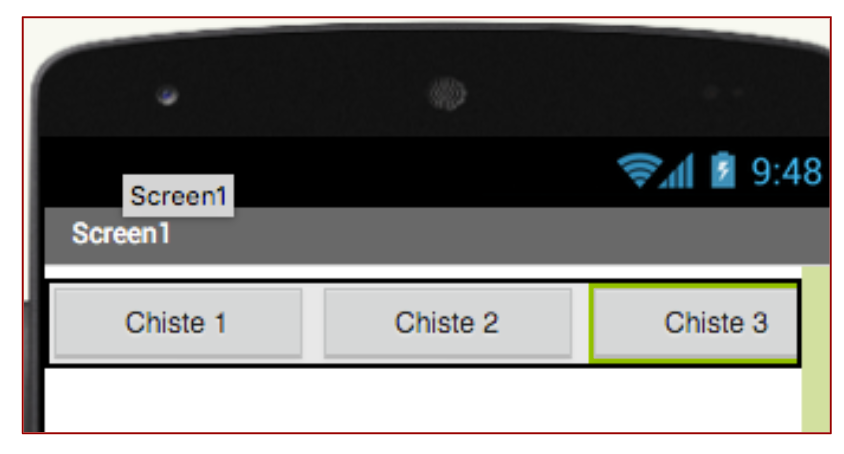
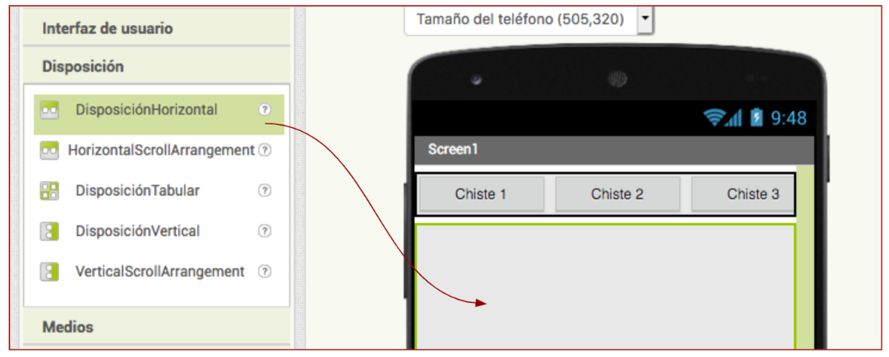
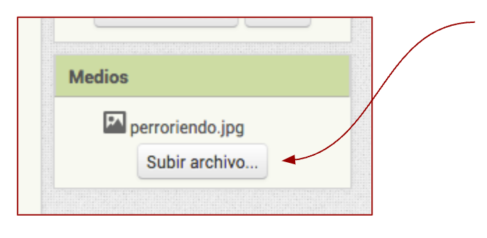
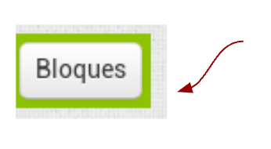
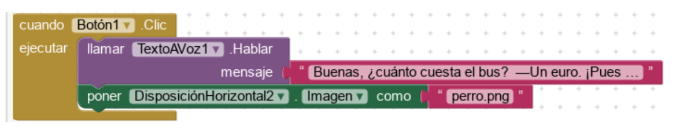

A continuación puedes ver un resumen con los. pasos principales para crear una APP de Chistes, aunque sería recomendable ver el videotutorial anterior.
1. Entra en www.appinventor.edu y crea un proyecto nuevo.
2. Introduce una disposición horizontal en la interfaz del móvil:
Interfaz de usuario→ Disposición contenedor horizontal dentro

3. Ajusta el envase “disposición horizontal” al ancho del móvil
Menú componentes→ Pincha DisposiciónHorizontal1

3.1 Menú Propiedades→ Ajusta el ancho al contenedor.

4. Introduce el botón dentro del envase.
Arrastra el botón dentro del recipiente y crea dos botones más.
4.1 Dentro de las propiedades de cada botón, establece su ancho al 33 %
4.2 Renombra cada botón: Chiste 1, Chiste 2 y Chiste 3.

5. Crea un recipiente nuevo.
Crea un nuevo recipiente y colocalo debajo del primero que has creado. Ajusta tanto su altura como su anchura al recipiente.

6. Subir 3 fotografías
Sube las fotografías al menú "Medios". El menú "Medios" está debajo del menú Componentes. Es importante subir fotografías que ocupen poco espacio para que así la APP no ocupe muchos megas. Puedes cambiar el tamaño en este link

7. Programar
Cada vez que se pulsa uno de los tres botones, debe aparecer una de las tres fotos. Haz clic en Menú “Bloques” y lo programamos:

7.1 Añade los siguientes bloques de programación

8. Importante
Ten en cuenta que "DisposicionHorizontal2" es el elemento que creaste debajo de los 3 botones.
El nombre que aparece después de "Imagen Como" deber ser exactamente igual al nombre del fichero que subiste en Medios, incluyendo su extensión, por ejemplo morsas.png
Repite el proceso para las otras dos fotos y persanaliza tu APP. Puedes duplicar el código haciendo clic en el botón derecho del ratón.
Imágenes: Capturas de pantalla APP Inventor editadas por Serxio G.R